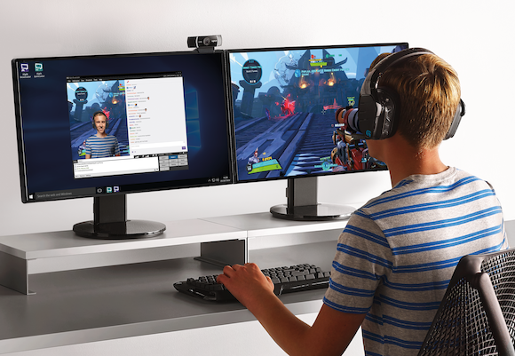

¡Hola que tal, bienvenido a mi primera página web! Aquí conocerás un poco más acerca de mí.
Mi nombre es Eduardo Josue Martinez Montoya, estudio en la preparatoria No.4, estoy cursando el 5to semestre en el turno matutino.
¿Cuáles son mis hobbies?
Uno de mis más grandes pasatiempos es acerca de la tecnología, más enfocado acerca de la informática, todo al respecto del software
es lo que más me gusta y más disfruto, mis hobbies es estar en mi cuarto armar y desarmar computadoras, estudiar acerca de ellos, funcionamientos
y cosas por el estilo para llenarme de más conocimiento.
Al igual uno de mis más grandes hobbies es jugar videojuegos, sobre todo soy fan de los sohooters, ya que no soy muy fan de jugar juegos de
historias o cosas por el estilo, prefiero un poco más la reacción, puntería y la agilidad realmente.

¿Qué voy a estudiar?
A pesar de que realmente me gusta la tecnología y todo lo que lo rodea, no creo estudiar algo relacionado a ello, realmente lo que
quisiera estudiar es contaduría, te preguntaras porque eso y es porque creo que es algo más que igual me gusta, todo al respecto relacionado
a los negocios, por lo cual estoy mucho también en la compra y venta, aparte de que para contaduría si necesito un papel, en cambio programador
o algo relacionado a ello no necesito forzosamente el papel, solo si saber bastante del tema.
¿Qué opino acerca de la tecnología?
Pienso que en el 100% de los casos debes tener conocimiento acerca de la tecnología ya que esto será el futuro, para todo necesitamos la tecnología
ya sea desde cosas pequeñas como utilizar el celular o hacer programas o cosas más difíciles, ahora sí que va la frase "Te adaptas o mueres" ya que todas
las industrias cada vez están más relacionadas con la tecnología por ejemplo con las criptomonedas.